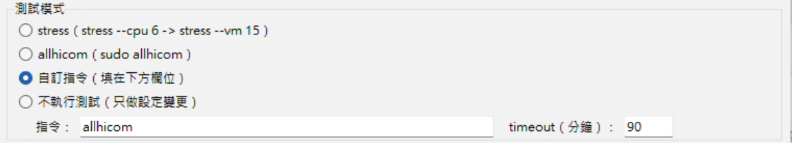
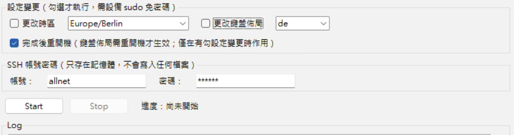
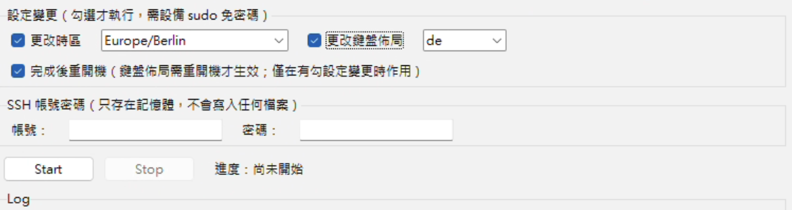

一個 exe，一次測完一整批
ALL228X 出廠測試工具 v5｜使用教學
最多 10 台同時進行，跑完一台就補上下一台
20 次登入，變成填一次、按一次
人只要做一次：填 IP 清單 → 解析並預覽 → 輸入帳密 → 按 Start
以前：手動 SSH 逐台操作
每一台都要：登入 → 下指令 → 記錄結果
尚未開始
0 / 20 台完成
現在：工具平行處理全部完成
最多 10 條 SSH 通道同時跑，跑完一台補一台
尚未開始
0 / 20 台完成
示意動畫：每台設定成相同工作量，不代表實際時間。
不是目標設備，自動略過
登入後先讀 MAC，開頭不是 00:0F:C9 就不測、記一筆 Log
① IP 清單只連你填的 IP，其他設備完全不碰
② 本機網卡檢查本機網卡不在這個網段時，按 Start 會跳警告
③ MAC 檢查登入後讀 MAC，開頭不符就略過
網段裡的 switch，MAC 開頭也是 00:0F:C9，MAC 檢查擋不掉它，所以 IP 清單一定要填對。
下載後點兩下就能用
Windows 10／11（64 位元），不需要安裝 Python 或其他軟體
- 下載
all228x_factory_test_tool_v5.exe
- 放在可以寫入的資料夾（例如桌面），結果檔會存在 exe 旁邊
- 點兩下開啟，啟動時要先解壓，約需 2～5 秒
- 跳出 SmartScreen：點「其他資訊」→「仍要執行」
示意圖
✕
Windows 已保護您的電腦
Microsoft Defender SmartScreen 已防止某個無法辨識的應用程式啟動。執行此應用程式可能會讓您的電腦暴露在風險中。
其他資訊
應用程式：all228x_factory_test_tool_v5.exe
發行者：未知的發行者
仍要執行不要執行
填 IP：可以跳號、可以範圍
試著改改看下面的欄位，右邊會即時展開
選一種測試模式
四選一，點卡片看看會跑什麼
自訂指令會先讓你確認
按 Start 後跳出確認視窗，按「否」就不會開始
- 確認視窗會顯示：完整指令、timeout、IP 數量
- 多道指令要寫在同一行，用
&& 或 ; 串接
- 指令裡有
sudo：設備必須設定 sudo 免密碼，否則略過那台
- 確認無誤再按「是」
① 在主畫面選自訂指令，填指令、timeout
② 按 Start，跳出確認視窗
時區、鍵盤勾選才會改
沒勾就不會動到設備設定
- 勾「更改時區」或「更改鍵盤佈局」，再選要改成的值
- 「完成後重開機」預設是勾起來的，但只有勾了時區或鍵盤時才會重開
- 改之前會先做檢查，改完會讀回來驗證
- 任一步失敗：這台就停止，不跑測試、不寫結果檔
勾選前
勾選後
每台自動跑完這幾步
灰色虛線的步驟代表沒勾選，會直接跳過
按「正常跑一台」或「模擬失敗」看看。
stress／allhicom 的指令回傳錯誤碼時不會停，一樣會寫結果檔，錯誤只記在 Log。
結果檔：一行就是一台跑完的設備
檔名是開始時間 YY-MM-DD-HHMM.txt，每跑完一台就馬上寫入
順序是跑完的先後，不是 IP 的順序。打字完成後，點任一欄位看說明。
點左邊任一欄位看說明
只有跑完的設備才有一行。行數比 IP 數少，代表有設備被略過或失敗，請看 Log。
Log 只顯示在視窗上，不會存成檔案，關掉程式前先看完。
存在 exe 所在的資料夾；那裡不能寫入時，改存到「文件」資料夾，Log 會註明。
三件最常搞錯的事
先想想看，再點卡片翻面